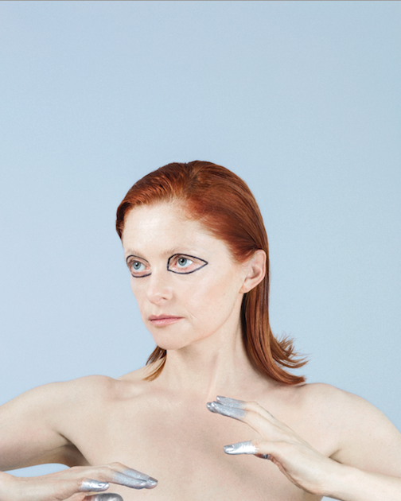

Alison Goldfrapp on paying attention to detail The musician on feeding your creative self, the value of fucking up, and being mindful of everything—even the boring stuff.
It’s been nearly four years since the last Goldfrapp record. At this point, how do you decide when it’s time to make something new? And what’s going on with you creatively in the interim?
We had a break after that last one, which was good for us. We were still working though. We went away and did the music for a play at the National Theatre. The piece was Medea, which is a Greek tragedy and very traditional, but was updated for this production. Carrie Cracknell was the director. We spent about a year doing that—working with a chorus of 13 women vocalists—which was great. It was wonderful to be doing something completely different and helps shake up the way you think about things when you go back to doing your own work.
Then, we just took our time and we didn’t rush into anything. And when we did get started, it took quite a while to get into the groove with it. We also took a while to think about what kind of sound we wanted to make, and as a result the process became much more electronic. We wanted to do something in a similar vein to Supernature or Black Cherry, but obviously didn’t want to repeat ourselves. It took a while to get there, which is fine. Sometimes it takes a long time to get where you’re going.
Also, I was really keen to get out of our regular routines. I thought that was exciting for us to create a different kind of energy and involve other people, outside producers. I think it was a positive thing, having other people in the room with us. Sometimes even if you dislike everything they do or hate all of their suggestions, it’s still useful because you have to articulate why you don’t like it. It gives you something to push against.
For a lot of recording artists with established careers, the music business can become like a treadmill—make a record so you can go on tour so you can make a record so you can go on tour. Carving time out in between albums so you can actually recharge seems important.
That’s something we had to learn. You need food. You need to feed your mind and your soul and your brain. You need to be inspired and gather new information. Unless you’re sticking to a formula, you have to change. If you don’t want to stick to a formula, you need time to absorb what’s around you. You need to be able to live life… and you need to have a life outside of the work.
Once you get into the studio, it’s such an absorbing process. For me, no matter how you approach it, you very quickly find yourself living and breathing it. The experience and the process takes over.
For this album I didn’t want to do that quite as much because I have certainly done that before, just surrendered my life to it. This time I wanted to live a bit more, which is why I wanted to do it in London. I didn’t want to entirely give up my social life, my personal life. I didn’t want it to become a 24/7 thing for me. I got to go home at night to my own home and maybe go out to drink with a mate or spend time with my dog and my partner. I’ve done that—been a hermit for a year or two years or however long it takes to make an album. I cannot do that again, really.
At this stage in your career, do you feel like you can control or premeditate the sort of of things you make or is there a certain element of, whatever happens in the studio is just going to happen?
I definitely think there is an element of whatever happens just happens. Quite often we set out to do one thing and somehow end up doing something completely different. I think that always happens in the process, so you have to be open to that. I don’t think you ever really know what it is until you’re in the process of doing it. It’s a delicate process of being careful and aware of what you’re doing and making, but also not being too self-conscious or overthinking things. You want to play up to your strengths, but I’m also always quite aware of us not repeating ourselves. There are certain ideas or obsessions you have that might come back—and I think you can have themes and certain elements that reoccur—and that’s great, but at the same time you never want to feel like you are rehashing something. It’s a weird thing. Sometimes you aren’t even conscious of those things. So, when you’re making something, it’s this very weird ground where you don’t want to be overly self-aware, but you are also mindful of this thing you are trying to make, this place you’re trying to get to, this sound you are trying to achieve and you’re always trying to get some balance between the two.
When you have a fan base that love what you do in an intense way, how hard is it to say, “We’re just going to make what we’re going to make,” and not think about the fact that people are listening and that there is a weight of expectation attached?
I definitely try not to think about that. Instead, I think about what feels good to me, what I feel comfortable with. Will I feel comfortable playing this in front of someone? Will I feel good about singing this? What is it I’m trying to achieve from this? Will I be able to live with this forever? I’ve definitely done things in the past which I haven’t liked and it was usually because I wasn’t thinking about those things or I was ignoring my feelings. So, ultimately, it’s not so much about thinking about what other people might be thinking. It’s really about focusing on what I feel comfortable with and I feel good about. That’s all you can do, really. It’s easy for those things to get distorted the more people you have buzzing about, telling you their opinions.
With our music it’s always about a balance between these two worlds—things that feel more intimate and stripped back, and these other things that are much bigger and pop sounding. I like both of those things. I think both of those approaches—both “sounds”—reflect something about what I want to do and what I want to say and how I want to perform, so I always want to represent these two sometimes opposing worlds. Sometimes it is more acoustic and contemplative, sometimes it’s more loud and brash. I wanted those two elements to be represented with this record, but I think that’s true of our work in general. Lyrically and visually, there are certain subjects that come up again and again—songs that allude to mysticism and magic and contemplation and ecstasy.
You are often described as a private person. Is it important to have a separation between your personal life and your creative life?
People often talk about how I’m a private person, but I don’t think I am particularly private. I just think I’m not that interested in fame. I’ve never courted that kind of thing. Somehow not chasing after fame is harder for people to understand than if I were desperately trying to be a celebrity. I’m not really very famous either, so it doesn’t really matter. I just don’t think about it very much. I just live my life. Your personal life always bleeds into your creative life, but it doesn’t have to be in obvious ways.
You’ve always been careful about the visuals for Goldfrapp and the people you collaborate with. For this record you did everything yourself. Why?
It’s a very different approach than what I’ve done before. For me it was very important that I did the visuals myself, actually took all the pictures myself. I was using a digital camera connected to a cable—you can see the wire in the picture—and I was using my feet to actually push the button to take the picture.
I just wanted to try it. I’ve always been interested in photography and I’m fascinated by artists who work with self-portraits. Will was quite encouraging about it. After years of hearing me moan about being photographed he was like, “You know, I think you should just do it yourself.” So I did. It’s nice to be reminded that you can just do things. You don’t need to spend thousands of dollars, you don’t need to assemble a team. You can just do it.
I remember reading an interview with you from around 2010—around the time of Head First—and you were talking about the power of saying no and how important it was to say no to things, to have agency over the way you are presented. There is something really cool about being to do everything yourself if you want to. You don’t have to say no, you don’t have to ask permission.
I guess it’s sort of really quite normal now. There are a lot of artists directing their own videos, taking on the other aspects of their visuals. It’s not unusual anymore, is it really? It’s a really interesting area. I think doing press and having photographs taken are, for me, very different things. I really enjoyed having my photographs taken, for instance, by Serge Leblon for Seventh Tree. It was a really positive experience, and a really quite creative process, working with him. Head First I didn’t enjoy it at all, I wasn’t enjoying anything about the whole era, to be honest. What we did musically, what was happening around, us behind the scenes—it was all very odd.
So yes, this is a new venture and it kind of makes sense in a lot of ways. The self-portraits are compelling for me to make, plus—to be honest—it makes sense financially. There is something completely practical about it and it was all good fun.
When you have extended periods of time off, do you miss performing? Are you one of those people that live for being up on stage in front of people?
No, I really suffer from nerves, I have to say. I really do, terribly, so I’m always kind of slightly petrified about starting again because I know it takes me a while to get into a routine with it all. It takes me a few weeks in a row to sort of settle in and not be so scared. I do really enjoy it as well, but I struggle with it. When you’re on tour and you’re doing lots of shows in a row, the easier it gets. You get used to it. You play a show and then you’re excited to get to the next venue, it’s like, “Wow, how’s this place going to be? What will this audience be like?” It becomes very fun. What’s difficult is when you have a one-off show and you haven’t performed in weeks or months. Once you’ve been out of the bubble for a while, suddenly jumping back into the bubble is hard.
Do you have to do a lot of things to take care of your voice when you’re touring?
I’m terrible, I don’t take particular care with anything, which is awful because I’m 50 now. I need to do more, probably. I used to smoke, but I gave up smoking 10 years ago—thank god. I rarely drink now. I do keep fit and I eat well, so I’m not doing too badly. I do warm ups and stuff like that before shows, but I’m not a fanatic, for sure. When people ask about that, I always just say the more important thing is to be simply be healthy. Don’t be a crazy person, especially as you get older. Take care of yourself.
Speaking of advice, what do you tell aspiring musicians or young bands who are looking for ways to get their music into the world?
No one ever asks me for advice! I don’t know, maybe they think, “Oh my god, don’t ask her, she’s the last person you want advice from.” No one ever asks me. I think I’d be a pretty good person to ask advice of. I’ve fucked up so many times, I think I’m probably quite good to tell people what not to do.
What have you learned from fucking up?
See, this is why people don’t ask me for advice. God, I don’t fucking know. [laughs] Well, that it’s OK, as long as you learn something from it. And it’s bound to happen at some point. I suppose I haven’t got any sort of particularly wise words, really, other than you should work really hard… and the work is not always what you think it is. There is no getting around the work requirement. Also, the creative side is only part of the work. I work really hard. For me that means that I’m working on all levels throughout the whole thing. Producing, writing, and now doing things like taking the photos and designing things—I’m involved in every aspect of it. I think that is actually really important. It’s one thing getting to a certain place professionally—getting people to pay attention to you, achieving some kind of success. Maintaining that success, keeping it going and growing—that’s a different kind of work. If you decide to do this—to have a band, make music, be an artist—you have to be really involved in every possible aspect and keep your eyes on every detail, even though some of the stuff seems really boring. You must. Even at a small level, just starting out, you have to pay attention to all that stuff or it will totally get away from you. You can’t assume that anyone else is looking out for you.
I like that you mention the fact that you are also a producer, which is something you don’t get enough credit for. In Goldfrapp—particularly when it comes to songwriting and production—you and Will are equal partners.
People always want to assume that, as a singer and as a woman, you’re simply the voice. I produce music as well and I’m doing all the artwork and all these other very unglamorous things, like going to marketing meetings. It’s sort of a constant every day process, working on all aspects of the band and the business. Also, having a great team around you is so important. People that you can talk to and who work hard as well, and who you trust and you can have fun with—that’s really important. You end up spending so much time with these people, you want everyone to be good at their job but you also just want to be able to get a drink with them, you know? I mean, I’ve got such great management now, which I didn’t have before… and it really changes everything. So that’s something I would tell people—it’s the little things that sound really boring that end up being so important. Even if you’re a solo artist, you’re still working with a team all the time, surround yourself with people you feel good about… and who feel good about you.
HOME SOME THINGS CLASS SITE